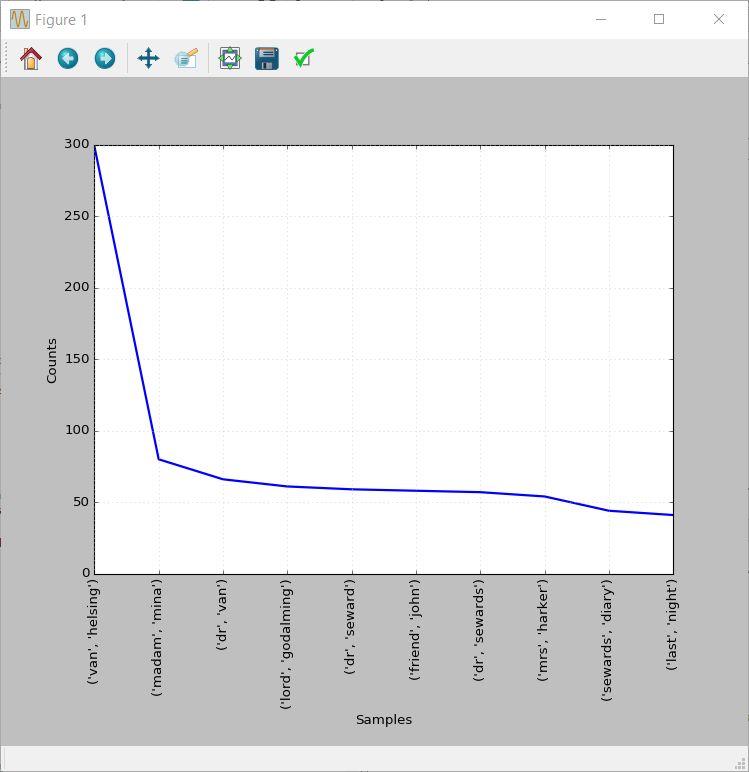

Python: Count Frequencies with NLTK
TweetLast time we learned how to use stopwords with NLTK, today we are going to take a look at counting frequencies with NLTK.
You can find the project here.
To start we need some text to analyze. We could use some of the books which are integrated in NLTK, but I prefer to read from an external file. The best source of free ebooks to practice your text analysis skills is gutenberg. Project Gutenberg is an awesome "open source" project that offers more than 53.000 free ebooks. For this tutorial we are going to use Dracula by Bram Stoker, you can download it as a UTF-8 txt.
For this project we are going to create the folders like this:

You just need to download the utf-8 version of a book of your choice and save it as ebook.txt in data folder inside your project. You can download the stopwords from here.
Let's start coding!
import nltk# Let's declare a function to get word index def get_index(in_list,in_string): for num,row in enumerate(in_list): if in_string in row: return num
# Let's open the book we downloaded book = open('data/ebook.txt','r').read() # Divide text by rows rows = book.split('\n')
import nltk
We import the necessary library as usual
get_index()
We define a simple function which helps us find the index of a word inside of a list. We loop for every row and if we find the string we return the index of the string
open() and split()
We load the book into a variable as a string and then we split it into lines
# Search for START and END tags to remove useless parts start_idx = get_index(rows,' START') end_idx = get_index(rows,' END') rows = rows[start_idx+1:end_idx]Now we look for START and END tags in our list and we redefine the list omitting the lines which are added by gutemberg.org.
# Create a list of words by converting to lowercase and splitting words = [s.lower().split() for s in rows if s] # Convert the list of lists into a flat list words = [sublist for l in words for sublist in l]We create a list of words by following these steps:# Import the stopwords stop = open('data/stop.txt','r').read() # Split the stopwords by line stop = stop.split('\n')
# Remove punctuation and numbers from words words = [''.join(c for c in w if c.isalpha()) for w in words] # Remove stopwords and blanks from words words = [w for w in words if w not in stop and w.isalpha()]
- Convert all the rows to lowercase and split the row into words
- Flatten the list of lists into a single list of words
- Load the stopwords and split them by line
- Remove punctuation from words
- Remove stopwords and empty elements from words
# Let's load the word into NLTK text = nltk.Text(words)Now we can load our words into NLTK and calculate the frequencies by using FreqDist(). After this we can use .most_common(20) to show in console 20 most common words or .plot(10) to show a line plot representing word frequencies:# Calculate Frequency distribution freq = nltk.FreqDist(text)
# Print and plot most common words freq.most_common(20) freq.plot(10)

Pretty boring words, how can we improve the output? We can use bigrams to show more relevant data. From Wikipedia: A bigram or digram is a sequence of two adjacent elements from a string of tokens, which are typically letters, syllables, or words.
# Get Bigrams from text bigrams = nltk.bigrams(text)After creating the bigrams we can plot them: # Calculate Frequency Distribution for Bigrams freq_bi = nltk.FreqDist(bigrams)
# Print and plot most common bigrams freq_bi.most_common(20) freq_bi.plot(10)
Pretty cool, right?
That's it for today. Have fun experimenting with word frequencies
Comments
Comments powered by Disqus